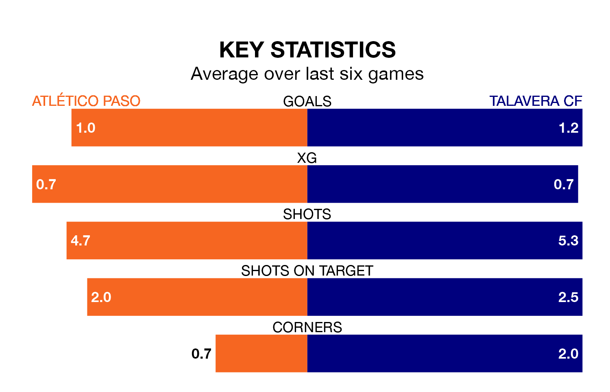

Two of the Segunda División RFEF Group 5's meanest defences go head-to-head on Sunday, when Atlético Paso host Talavera CF.
No teams have conceded fewer goals than Atlético Paso to date: the home side have let in just 18 goals in 30 games.
Talavera have conceded 24 goals in 30 games, giving them the third tightest back line so far this season.
Key to Atlético Paso's home form has been Eduardo Loscos Ramos, who has allowed 0.45 goals past him per 90 minutes, compared to 0.54 for Gabriel Ribas Ródenas in the opposite net.
Atlético Paso are fourth in the table after 30 games, of which they have won 12 and drawn 11, earning 47 points.
Talavera are two places behind the home team in sixth, with 11 wins and 10 draws putting them on 43 points.
Atlético Paso are in mixed form in the Segunda División RFEF Group 5, with three wins and a draw from their last six games.
With two wins and two draws over that period, the visitors' form is slightly worse – they have taken eight points from 18, compared to Atlético Paso's 10.
Atlético Paso's last match was on April 7, a 1-0 win against Ursaria, with Juan Carlos Menudo Domínguez getting the goal for Atlético Paso.
Talavera drew 1-1 with Llerenense last time out, also on April 7, with Caio Emerson Pereira Marques da Silva on the scoresheet.
Updated: 14:47 (UTC), 09/04/24